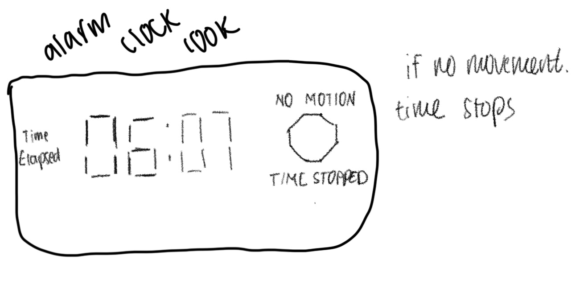
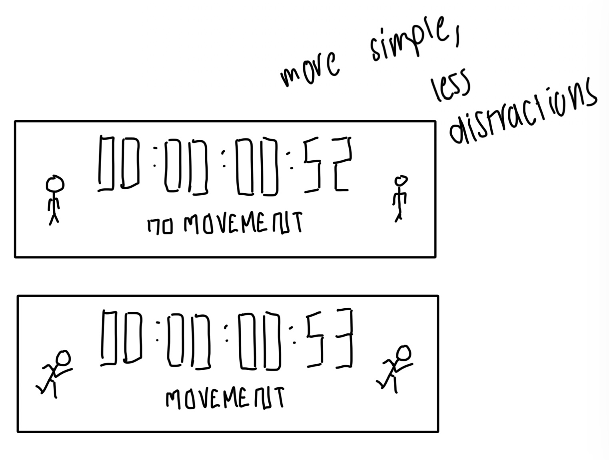
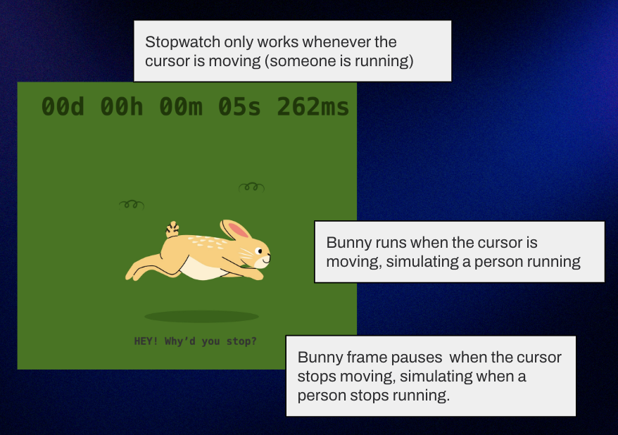
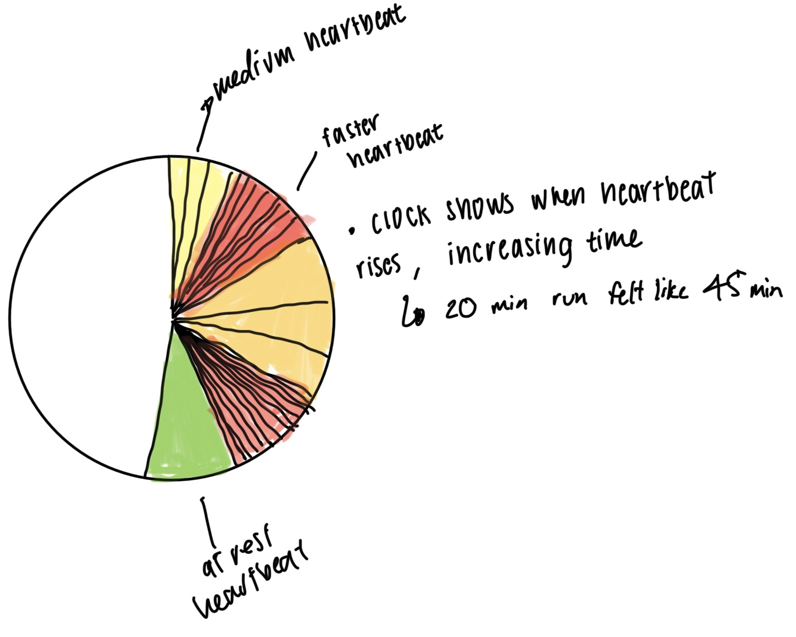
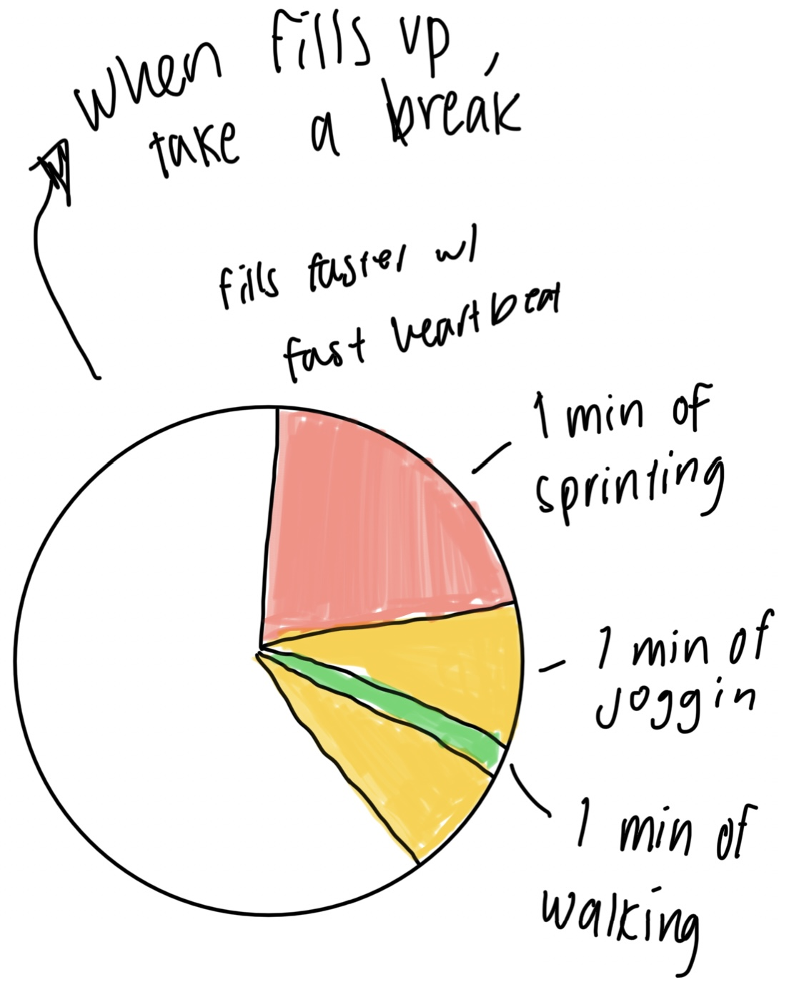
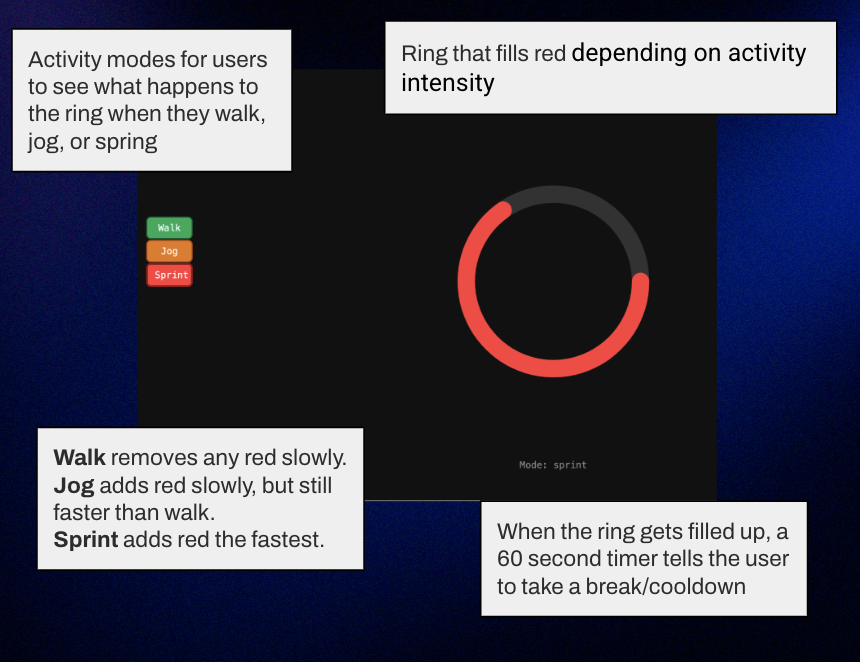
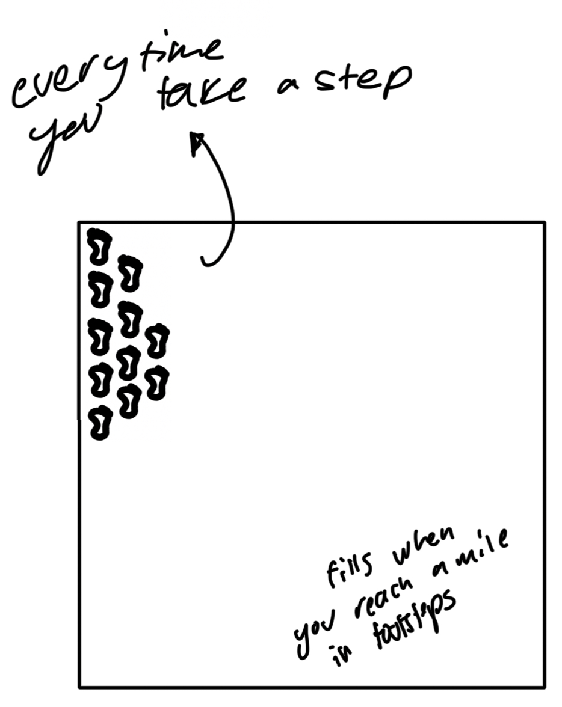
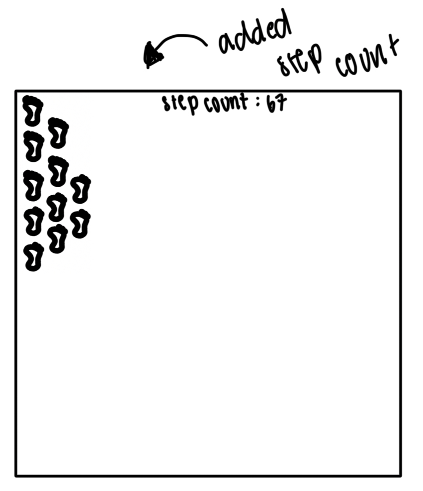
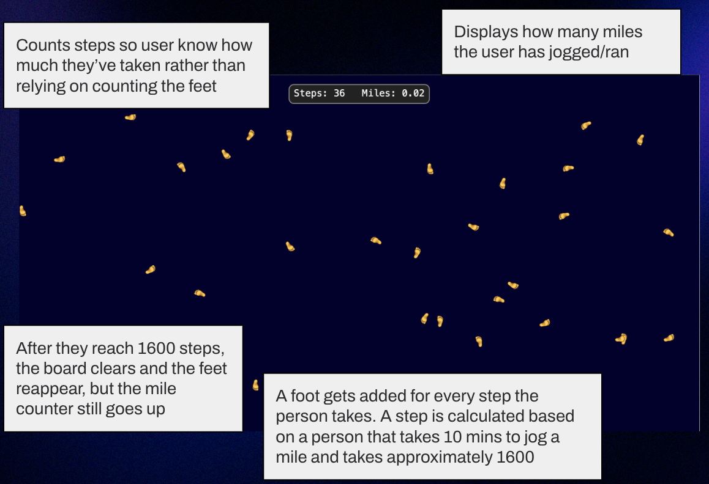

Context
This sketch motivates runners by acting as a stopwatch that only counts time when the user is actively moving, simulating jogging through cursor ovement. It visualizes progress with an animated running bunny that pauses whenever the user stops.
Instead of visualizing time in hours and minutes, this clock redefines time through movement and effort. It treats activity as the unit of progress, encouraging continuous engagement rather than passive observation.
- Context: It’s for runners or joggers who want a playful, interactive way to stay motivated during exercise sessions.
- Design decisions:
- Interactive motion tracking: The timer only runs when the cursor moves to mimic running activity, reinforcing movement as progress.
- Animated bunny feedback: A looping bunny run animation provides immediate visual feedback and motivation, making the experience feel lively and rewarding.
- Minimal layout and neutral colors: The design focuses attention on motion and animation, ensuring clarity and accessibility on any screen size.
- Future work: In the future, I would add sound effects or multiple encouraging messages when the user keeps moving.I would also try to integrate real movement tracking (e.g., smartwatches) for more accurate activity detection.
Sketch evolution
Replace these images with your own sketch evolution images.



Context
This sketch visualizes heart rate changes during running by showing a circular ring that fills or empties in red depending on activity intensity. It simulates how heart rate accelerates and decelerates through visual feedback linked to user input.
Rather than measuring chronological time, this clock visualizes biological time and the rhythm of the body. It focuses on how time feels internally through heartbeat patterns, not how it’s measured externally by seconds and minutes.
- Who is this for? It’s for runners who want a fun, visual way to exertion levels who want a simple, visual way to stay aware of their heart rate during workouts.
- Design decisions:
- Color-coded feedback: Red represents intensity and urgency, helping users intuitively associate higher heart rates with the need to rest.
- Adjustable activity levels: Buttons for walk, jog, and run make the sketch interactive and easy to use without sensors, letting users simulate different heart rates.
- Circular visualization: A ring fills or drains smoothly to mirror pulse rhythms, offering a calming yet informative display.
- Future work: In the future, I would connect to real heart rate sensors for live feeedback, like through smart watches.I would also try to add audio cues or gradual color shifts to indicate safe recovery zones.
Sketch evolution
Replace these images with your own sketch evolution images.



Context
This sketch visualizes running progress by adding a footprint to the screen for every simulated step, based on an average pace of 10 minutes per mile and 1,600 steps. It serves as a visual “running clock” that tracks distance over time.
This clock measures distance-driven time, turning steps and pace into temporal rhythm. Instead of marking fixed units like seconds or hours, it expresses time through the cadence and flow of movement, aligning more closely with a runner’s lived experience.
- Who is this for? It’s for runners who want a fun, visual way to track their pace and distance while running, turning time and motion into a motivating display. during workouts.
- Design decisions:
- Footprint-based visualization: Each step adds a footprint to represent progress in a tangible, rhythmic way that mirrors real running movement.
- Time-to-step calculation: Dividing 10 minutes by 1,600 steps ensures realistic pacing and a sense of steady motion tied to real-world running metrics.
- Reset and mile tracking: The screen resets after each mile to keep the animation clean, while a persistent mile counter provides a sense of achievement and long-term tracking.y.
- Future work: In the future, I would sync it up to a smartwatch so the feet being added matches the steps being taken in real life, matching different runners’ speeds or stride lengths. I would also like to introduce sound effects or gradient trails to show intensity or terrain changes over time.
Sketch evolution
Replace these images with your own sketch evolution images.



Adapted from Golan Levin, 2016-2018